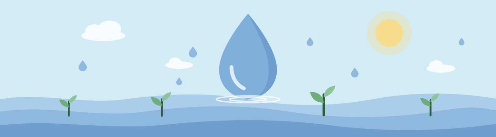

Consumo consciente
Como cuidar da água no dia a dia
Cuidar da água começa por observar os próprios hábitos. Algumas mudanças na rotina ajudam a evitar desperdícios sem deixar de atender às necessidades de higiene e limpeza.
Observe sua rotina
Em quais momentos a água continua correndo sem estar sendo utilizada? Pense no banho, na escovação dos dentes e na lavagem da louça. Identificar essas situações é um ponto de partida para mudar um hábito por vez.
No banheiro
Procure reduzir o tempo de banho e interromper o fluxo de água enquanto se ensaboa, quando isso for possível. Ao escovar os dentes, mantenha a torneira fechada durante a escovação.
Também observe se torneiras, chuveiros e descargas apresentam vazamentos. Quando identificar um problema, providencie o reparo.
Na cozinha e na lavanderia
Ao lavar a louça, retire os restos de alimentos antes e evite deixar a torneira aberta durante todo o processo. Organize a lavagem para utilizar a água nos momentos necessários.
Ao usar a máquina de lavar roupas, procure reunir uma quantidade adequada de peças, respeitando a capacidade e as orientações do fabricante.
Escolha um primeiro passo
Para começar, escolha uma atitude que você consiga manter durante a semana:
- Fechar a torneira durante a escovação.
- Reduzir o tempo de banho.
- Verificar torneiras e descargas.
- Organizar melhor a lavagem da louça.
Depois, observe o que funcionou e escolha o próximo hábito. O objetivo é evitar desperdícios de forma contínua.
Fontes e referências
Texto educativo elaborado para este projeto, com apoio nas orientações de uso consciente da água da Sabesp.